Current Review — SSJ4, SSJ God & SSJ Blue
Commit e232830
Three new forms in chain order: SSJ3 → SSJ4 → God → Blue.
Every frame is a complete authored sprite, and every handoff is byte-identical to the
canonical form either side of it.
1. SSJ4
Crimson mane, magenta fur, tail, orange trousers
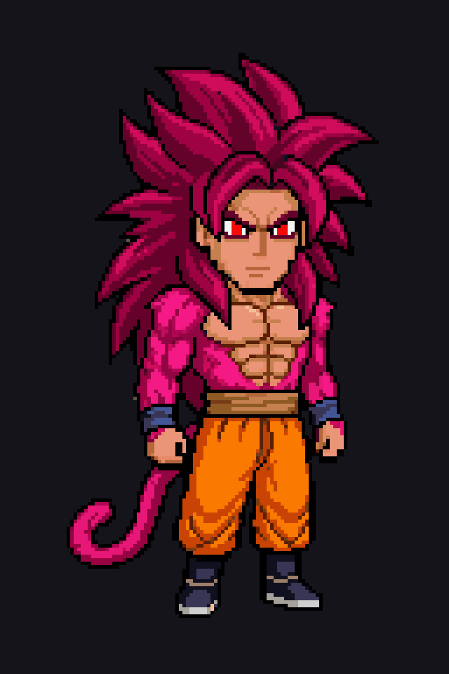
Canonical form 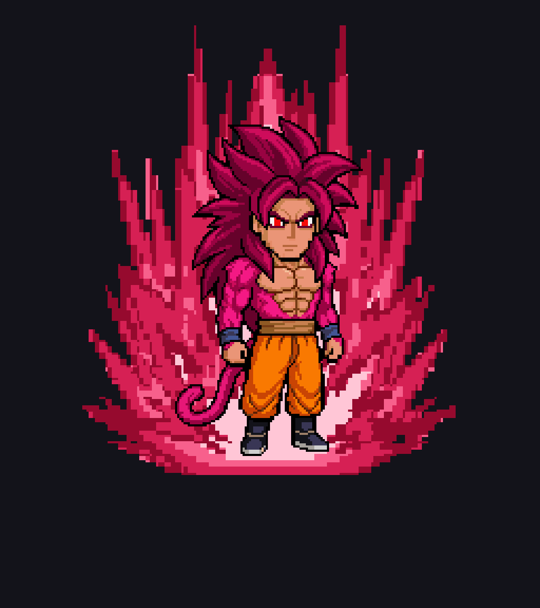
Idle — normal speed
Idle — slow
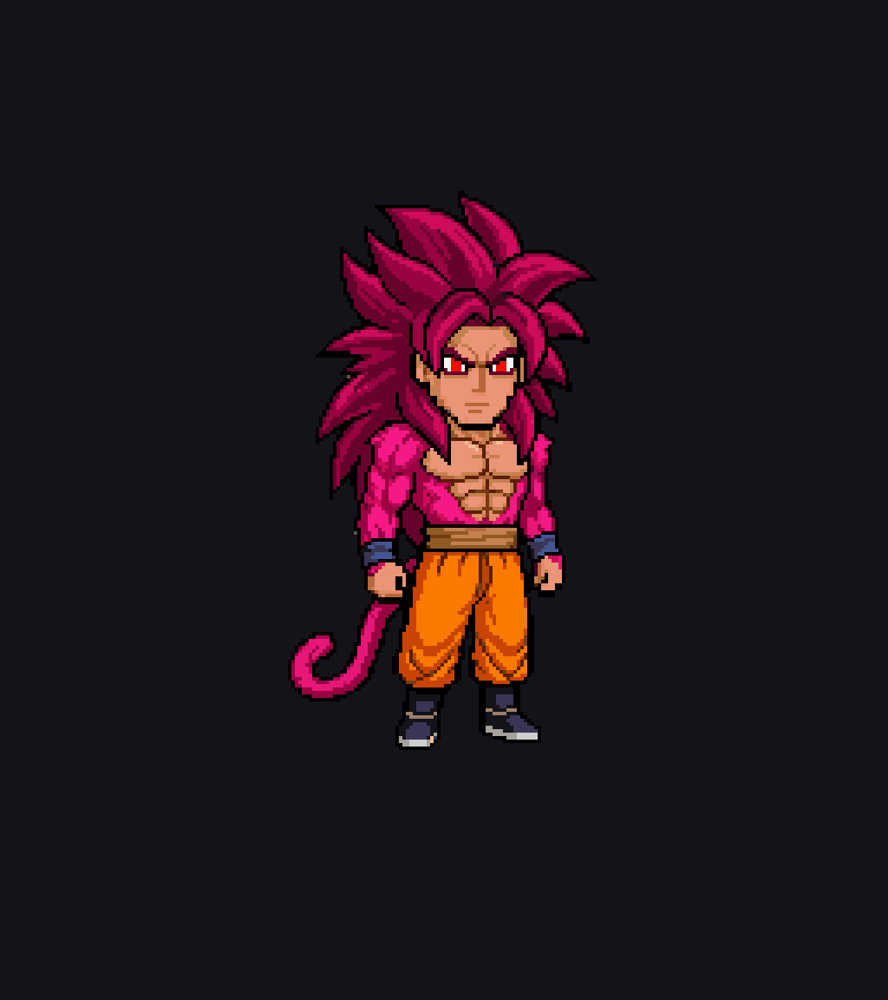
Idle — body only
SSJ3 → SSJ4 — 17 frames
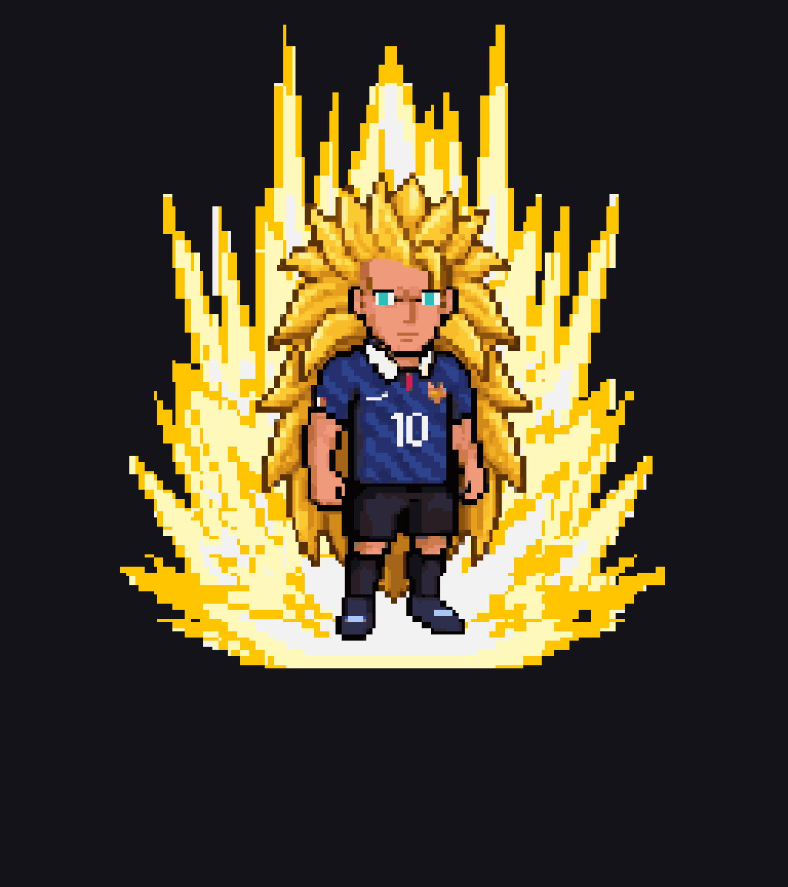
Normal speed
Slow
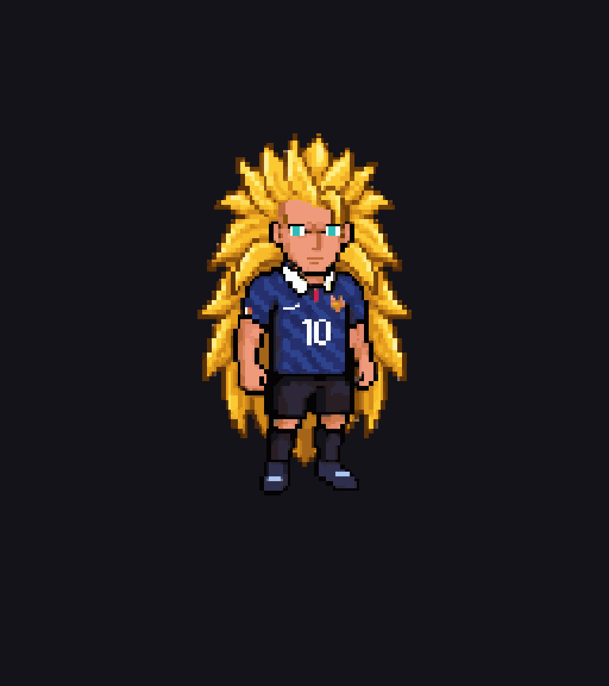
Body only
Idle frames, native resolution
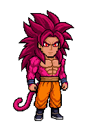
00 01 02 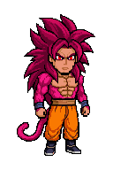
03 04 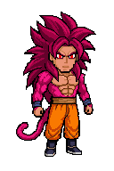
05 06 07 Transformation frames, native resolution
00 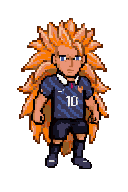
01 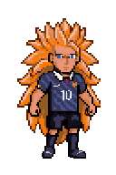
02 03 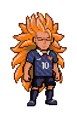
04 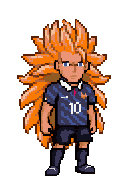
05 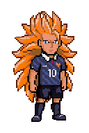
06 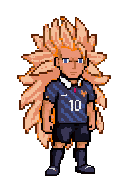
07 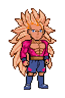
08 09 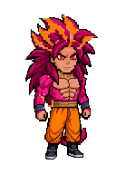
10 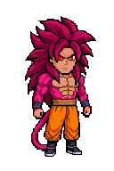
11 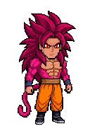
12 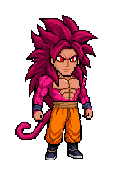
13 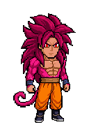
14 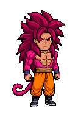
15 16
2. SSJ God
Red hair and eyes, fiery red-orange-gold aura
Canonical form
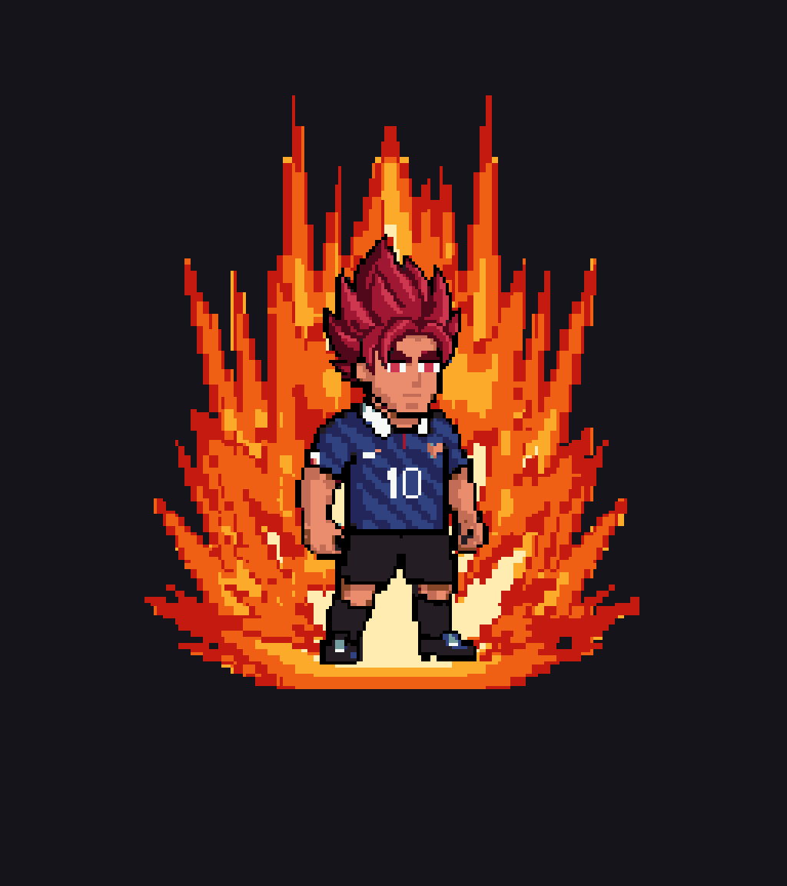
Idle — normal speed
Idle — slow
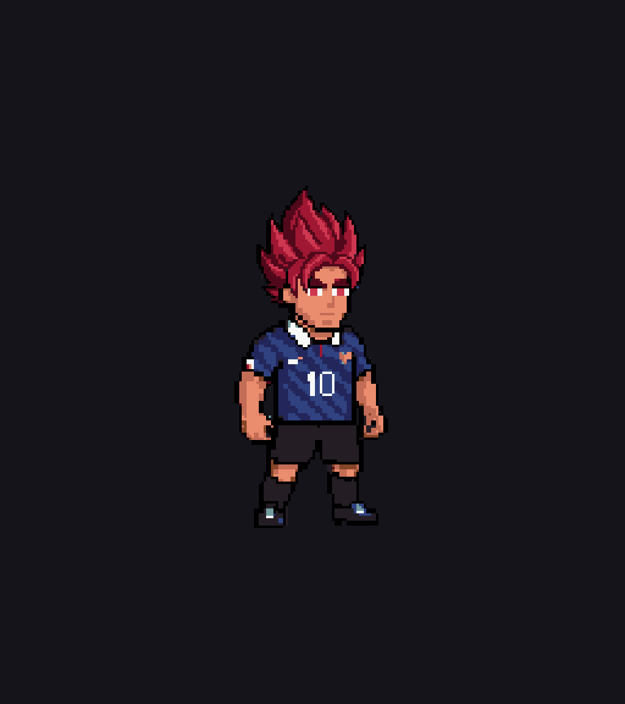
Idle — body only
SSJ4 → God — 17 frames
Normal speed
Slow
Body only
Idle frames, native resolution
00 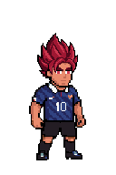
01 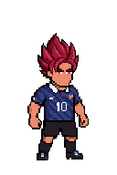
02 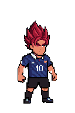
03 04 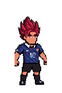
05 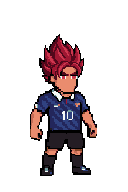
06 07 Transformation frames, native resolution
00 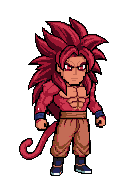
01 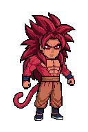
02 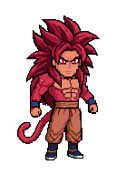
03 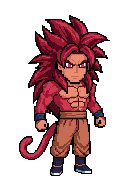
04 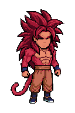
05 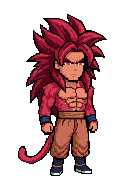
06 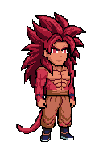
07 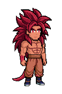
08 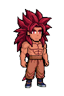
09 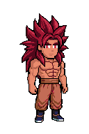
10 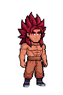
11 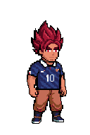
12 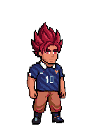
13 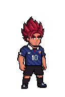
14 15 16
3. SSJ Blue
Cyan Super Saiyan hair, deep blue to cyan aura
Canonical form
Idle — normal speed
Idle — slow
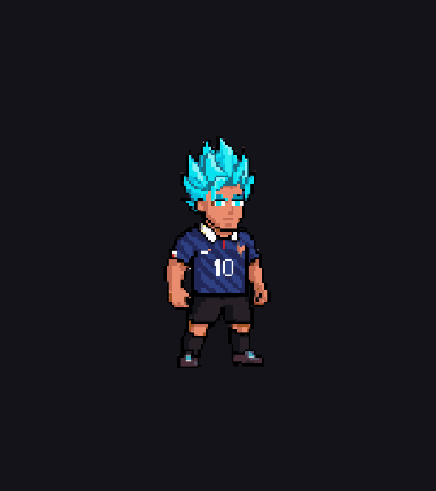
Idle — body only
God → Blue — 17 frames
Normal speed
Slow
Body only
Idle frames, native resolution
00 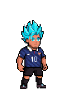
01 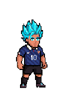
02 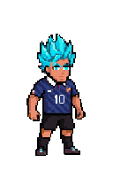
03 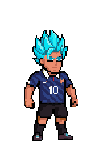
04 05 06 07 Transformation frames, native resolution
00 01 02 03 04 05 06 07 08 09 10 11 12 13 14 15 16